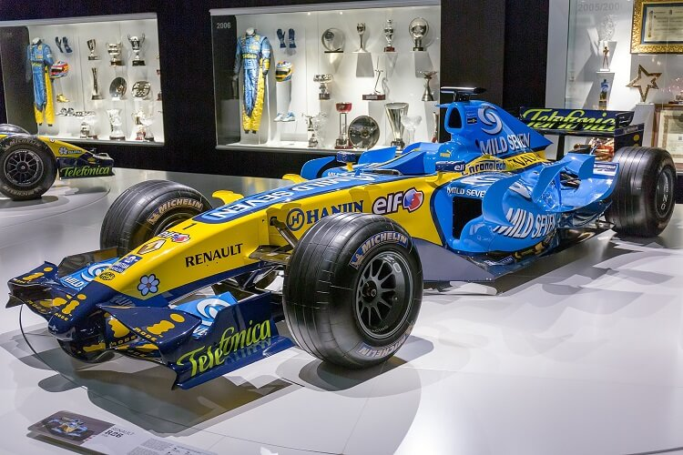

Renault R26, 2006 Formula 1 sezonunda Renault F1 takımı tarafından kullanılan bir Formula 1 aracıdır.
Aracın şasisi Bob Bell, James Allison, Tim Densham ve Dino Toso tarafından tasarlanmıştır. Pat Symonds, Mühendislik bölümünün yönetici direktörü olarak otomobilin tasarımını ve üretimini denetlemiştir.
otor tasarımına liderlik eden Rob White olmuştur.

Sezon boyunca 18 yarışta 8 Birincilik, 7 İkincilik, 4 Üçüncülük, 7 Pol Pozisyonu, 5 En Hızlı Tur ile birlikte toplam 206 puan toplamayı başardı.
Sezonun büyük çoğunluğunda rakipsizdi. En yakın rakibi Ferrari 248 dir.
Fernando Alonso ve Giancarlo Fisichella'nın üstün performansı üreticiler şampiyonluğunun kazanılmasında rol oynadı.
Dayanıklılık açısından rakipsizdi. 2006 Dünya Sürücüler Şampiyonu Fernando Alonso'nun kullandığı R26-03 şasisi, 2006 sezonu boyunca aynı şasi oldu.
(Bir sezonda F1 sürücüleri genellikle birden fazla şasi kullanır.)
R26 nın şasisi, Dünya şampiyonluğunu kazanmanın yanı sıra, 2006 sezonunda rakiplerinen daha fazla tur atmış ve daha fazla yarış kazanmıştır.
R26-03 şimdi Renault'nun Paris'teki “Histoire et Collection” miras koleksiyonunda yer almaktadır.